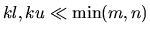
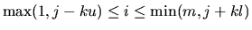
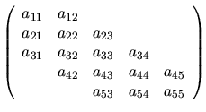
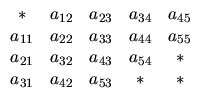
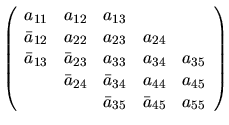
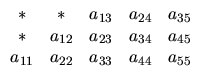
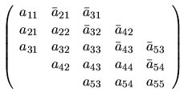
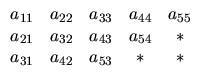

An m-by-n band matrix with kl subdiagonals and ku superdiagonals may be stored compactly in a two-dimensional array with kl+ku+1 rows and n columns. Columns of the matrix are stored in corresponding columns of the array, and diagonals of the matrix are stored in rows of the array. This storage scheme should be used in practice only if , although LAPACK routines work correctly for all values of kl and ku. In LAPACK, arrays that hold matrices in band storage have names ending in `B'.
To be precise, aij is stored in AB(ku+1+i-j,j) for . For example, when m = n = 5, kl = 2 and ku = 1:
| Band matrix A | Band storage in array AB |
|  |  |
The elements marked  in the upper left and lower right
corners of the array AB need not be set, and are not referenced by
LAPACK routines.
in the upper left and lower right
corners of the array AB need not be set, and are not referenced by
LAPACK routines.
Note: when a band matrix is supplied for LU factorization, space must be allowed to store an additional kl superdiagonals, generated by fill-in as a result of row interchanges. This means that the matrix is stored according to the above scheme, but with kl + ku superdiagonals.
Triangular band matrices are stored in the same format, with either kl = 0 if upper triangular, or ku = 0 if lower triangular.
For symmetric or Hermitian band matrices with kd subdiagonals or superdiagonals, only the upper or lower triangle (as specified by UPLO) need be stored:
For example, when n = 5 and kd = 2:
| UPLO | Hermitian band matrix A | Band storage in array AB |
| `U' |  |  |
| `L' |  |  |
EISPACK routines use a different storage scheme for band matrices, in which rows of the matrix are stored in corresponding rows of the array, and diagonals of the matrix are stored in columns of the array (see Appendix D).